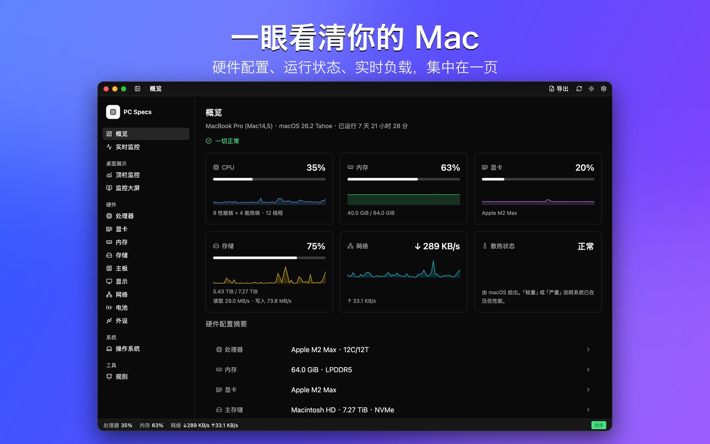
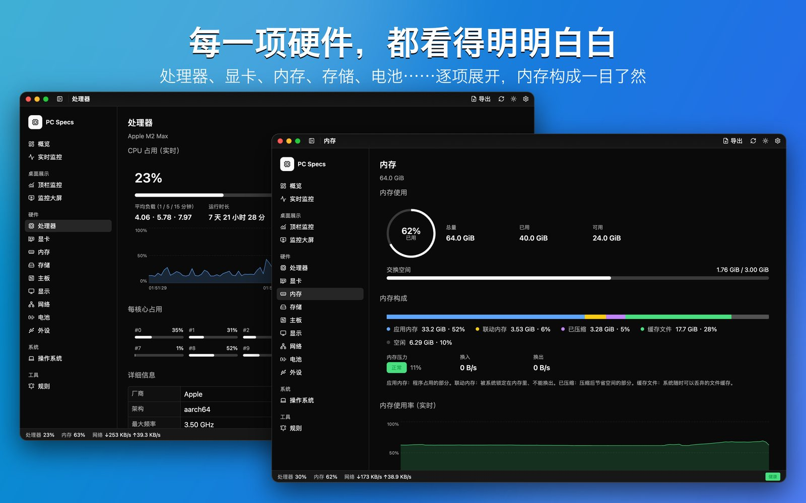
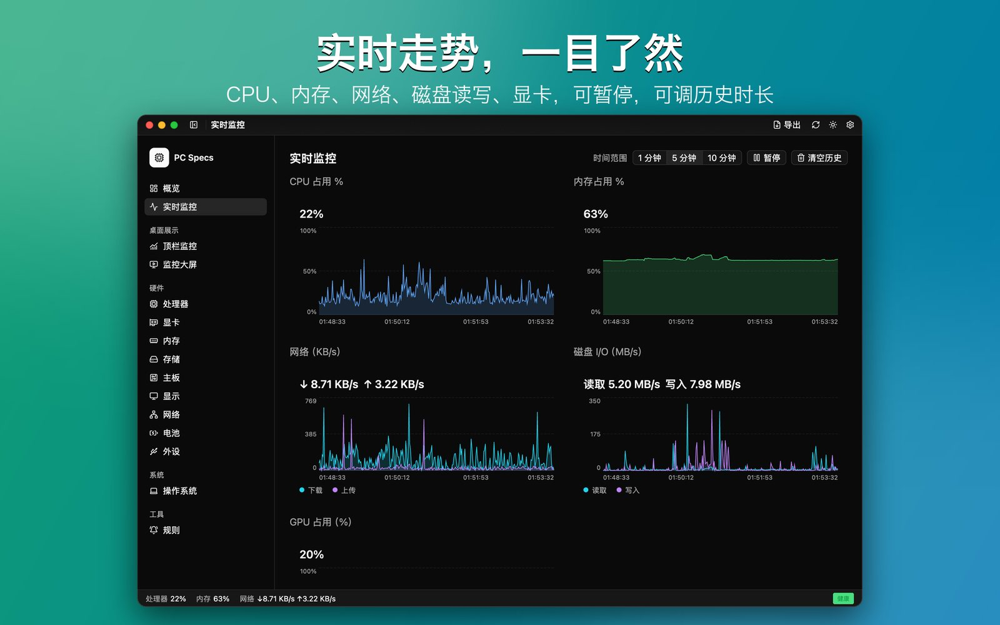
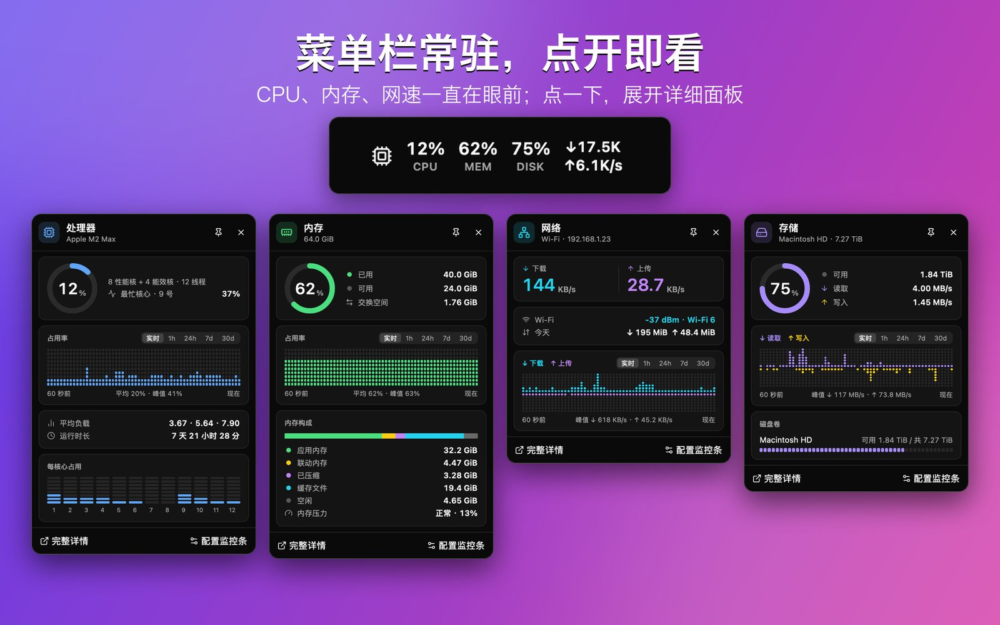
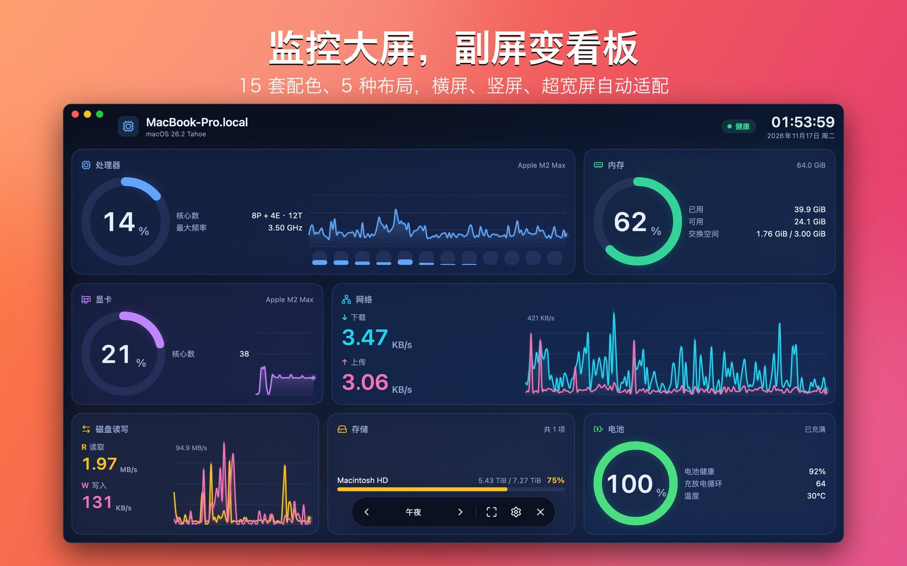
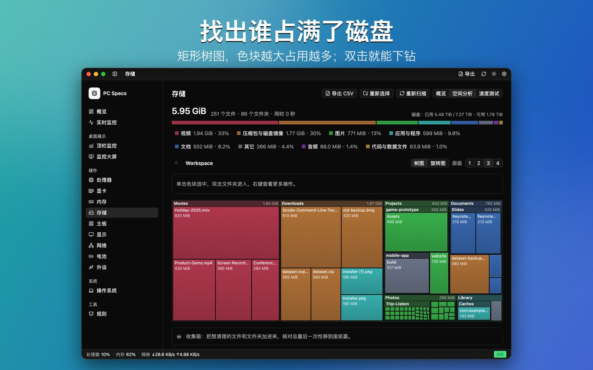
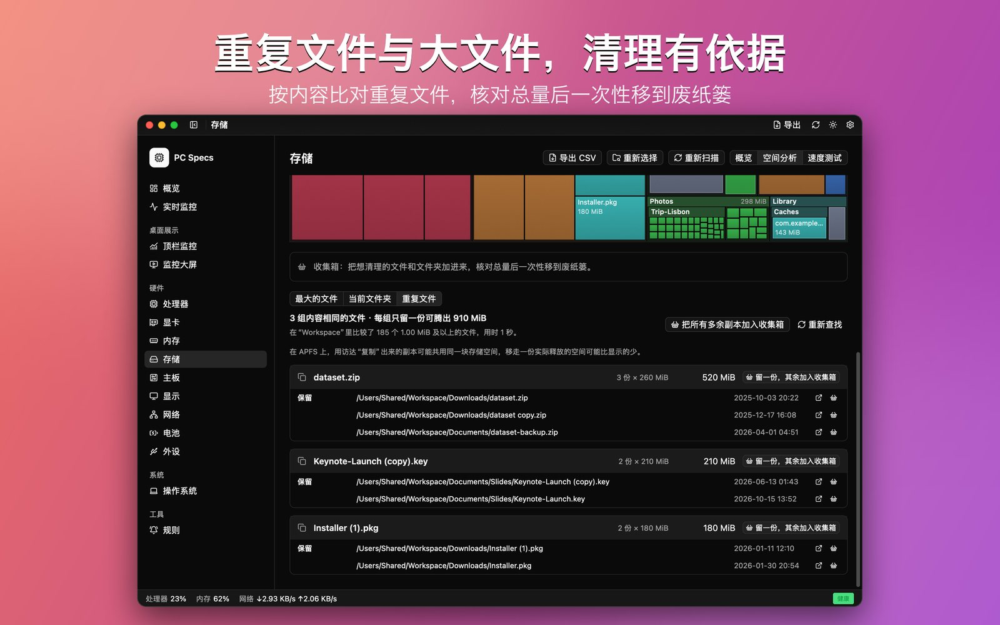
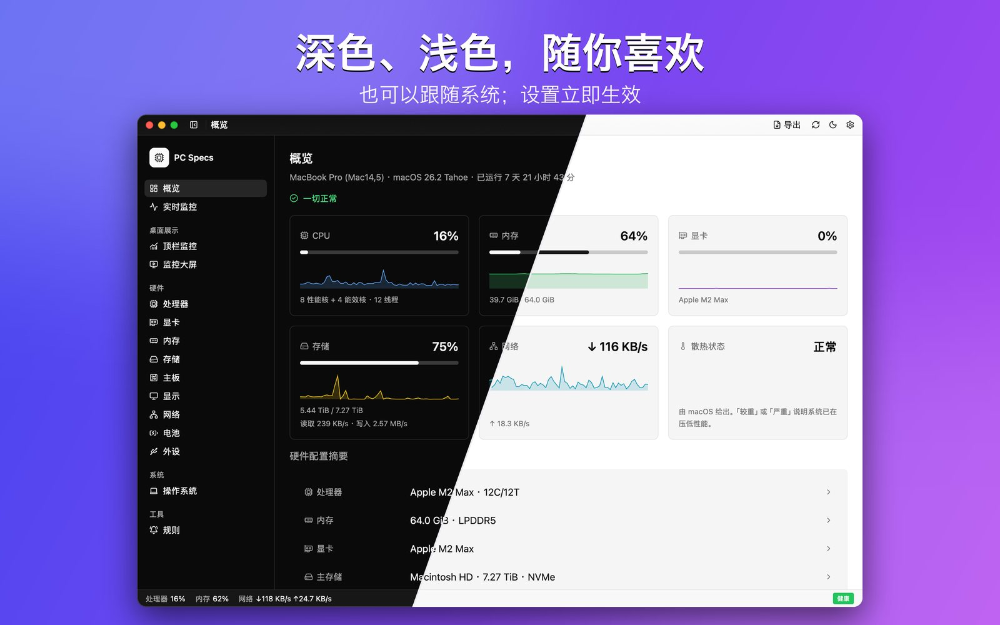

PC Specs
看清电脑配置，盯紧实时状态，找出占满磁盘的文件
下载全功能版在 GitHub Releases 页面选择对应系统的安装包。同一份源码也编译成功能精简的 Mac App Store 版，区别见下面「两个版本」。

主要功能
概览
一屏看清 CPU、内存、显卡、存储、网络和散热状态，有没有异常，一句话告诉你；每张卡片都带实时走势，点一下进入详情。
硬件详情
处理器、显卡、内存、存储、主板、显示、网络、电池、外设、操作系统逐项展开；内存构成、Wi-Fi 信号、电池健康一目了然。系统没有提供的信息如实写明，不编数字。
实时监控
CPU、内存、网络、磁盘读写和显卡的实时走势，每个 CPU 核心单独显示；可以暂停、清空，历史时长在 1、5、10 分钟之间切换。
顶栏监控
macOS 菜单栏里放上 CPU、内存、存储、网速，样式和顺序随你调；点开弹出详细面板，可看 1 小时到 30 天的走势。
监控大屏
把实时状态铺满另一块显示器：15 套配色、5 种布局，横屏、竖屏、超宽屏自动适配；开着的时候保持屏幕常亮。
存储空间分析
选一块磁盘或任意文件夹，画成矩形树图或旋转图，色块越大占用越多；有最大文件榜、重复文件（按内容比对）和「相比上次什么变大了」。
收集箱与测速
想清理的文件先放进收集箱，核对好总量再一次性移到废纸篓或回收站；磁盘速度测试能测顺序读写和 4K 随机读写，并与上次对比。
规则与通知
哪个读数、超过多少、持续多久，就发一条系统通知，带冷却时间，不会刷屏；内置 CPU、内存、磁盘三条默认规则。
导出与设置
导出 Markdown、JSON 或 PNG 长图，默认隐去 MAC 地址、序列号、主机名；深色、浅色或跟随系统；设置可以导出，换一台电脑导入即可。
两个版本
同一份源码，编译时选择版本。从 GitHub 下载的是全功能版；Mac App Store 版要在苹果的沙盒里运行，不能读取私有接口、不能枚举其他进程、不能联网，所以功能更少：
| 能力 | 全功能版（GitHub 下载） | Mac App Store 版 |
|---|---|---|
| 平台 | Windows、macOS、Linux | macOS 13 及以上 |
| 概览、实时监控、顶栏监控、监控大屏、各硬件页、规则与通知 | 有 | 有 |
| 存储空间分析、磁盘速度测试 | 整块磁盘或任意文件夹 | 只能分析你在对话框里亲自选的文件夹；测速只测系统盘 |
| 温度、风扇、电压、功耗等传感器 | 有 | 无（只有系统给出的「散热状态」） |
| 进程列表与每个进程的占用、网络流量 | 有 | 无 |
| 开发环境检测、启动项管理、应用管理、系统缓存清理 | 有 | 无 |
| 公网 IP 查询、网络延迟检测、Webhook 推送 | 有（见隐私政策） | 无，应用不联网 |
| 本机 HTTP 数据接口 | 有，默认只在本机可访问 | 无 |
界面一览







系统要求
Windows · macOS 11 及以上（Mac App Store 版需要 macOS 13 及以上）· Linux（Ubuntu 22.04+、Debian 12+、Fedora 36+ 及同期的发行版，需要 Vulkan 驱动和 Wayland / X11 会话）。界面语言：简体中文、English，可在设置里切换。
源码和各系统的安装说明在 GitHub。